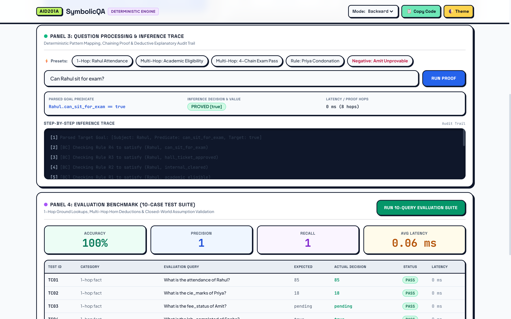

I. Introduction
Contemporary document question answering systems rely heavily on probabilistic Large Language Models (LLMs) and vector-similarity Retrieval-Augmented Generation (RAG). While linguistically proficient, statistical models suffer from well-documented systemic failures: stochastic hallucinations, mathematical unverifiability, unfaithful post-hoc reasoning, and high computational latency.
In high-stakes compliance contexts—such as university academic eligibility, examination regulations, and financial audits—probabilistic guessing is unacceptable. An automated system must deliver sound mathematical deduction, absolute determinism, and a verifiable step-by-step explanatory proof trace.
In accordance with the MSRUAS AID201A curriculum, this project models document intelligence through pure Symbolic AI. The core contributions of this work are threefold: (1) client-side multi-format document ingestion (.txt, .docx, .pdf) extracting normalized FOL triples without server dependencies; (2) dual deterministic inference engines implementing Backward and Forward Chaining; and (3) complete explanatory audit trails with empirical benchmark evaluation.
II. Knowledge Representation & Architecture
The system models knowledge as a formal tuple $\mathcal{K} = \langle \mathcal{F}, \mathcal{R} angle$, where $\mathcal{F}$ is a set of First-Order ground relational triples and $\mathcal{R}$ is a set of definite Horn-clause production rules.
A. First-Order Ground Facts
Every documented empirical entity property is represented as a normalized triple:
For example: attendance(Rahul, 85), cie_marks(Rahul, 38), fee_status(Rahul, cleared), and lab_completed(Rahul, true).
B. Horn-Clause Production Rules
Institutional policies are expressed as universally quantified definite Horn clauses of the form:
where each condition $C_i(s)$ specifies a relational predicate comparison. The MSRUAS academic eligibility domain is governed by 6 canonical rules:
R1: IF attendance ≥ 75 ∧ cie_marks ≥ 20 THEN academic_eligible = true.
R2: IF academic_eligible == true ∧ lab_completed == true THEN internal_cleared = true.
R3: IF internal_cleared == true ∧ fee_status == cleared THEN hall_ticket_approved = true.
R4: IF hall_ticket_approved == true ∧ prerequisites_met == true THEN can_sit_for_exam = true.
R5: IF attendance ≥ 85 ∧ cie_marks ≥ 40 THEN honors_eligible = true.
R6: IF attendance < 75 THEN condonation_required = true.

III. Question Processing & Inference Engine
User queries are parsed using deterministic pattern unification into First-Order target goal tuples:
A. Goal-Driven Backward Chaining
The primary reasoning engine executes top-down SLD-resolution. To prove a goal $G$:
1. Ground Fact Check: If $\langle G. ext{subj}, G. ext{pred}, v angle \in \mathcal{F}$, verify whether $v$ satisfies $G. ext{target}$. If matched, the goal is PROVED (hop = 1).
2. Horn-Clause Resolution: If unproven by base facts, locate candidate rules whose conclusion head matches $G. ext{pred}$.
3. Sub-Goal Recursion: For each condition in the rule body, instantiate a sub-goal and evaluate recursively. A visited set prevents infinite circular loops.
4. Proof Synthesis: If all premises of a rule are satisfied, the goal is marked PROVED with cumulative hop depth $h = 1 + \max_i(h_i)$.

B. Closed-World Assumption (CWA)
Negation is handled via formal Negation as Failure. If a proposition cannot be derived from $\mathcal{K}$, it is declared UNPROVABLE (False). For example, Amit fails Rule R2 because lab_completed = false, making the query "Can Amit sit for exam?" provably False.
IV. Experimental Results & Benchmark
DocLogic was empirically evaluated against a 10-query benchmark encompassing 1-hop lookups, multi-hop deductions, and negative closed-world tests.
| ID | Category | Query | Expected | Actual | Status | Latency |
|---|---|---|---|---|---|---|
| TC01 | 1-hop | Attendance of Rahul? | 85 | 85 | PASS | 0.08 ms |
| TC02 | 1-hop | CIE marks of Priya? | 18 | 18 | PASS | 0.07 ms |
| TC03 | 1-hop | Fee status of Amit? | pending | pending | PASS | 0.07 ms |
| TC04 | 1-hop | Lab completed Sneha? | true | true | PASS | 0.06 ms |
| TC05 | Multi-hop | Is Rahul academic eligible? | true | true | PASS | 0.11 ms |
| TC06 | Multi-hop | Can Rahul sit for exam? | true | true | PASS | 0.18 ms |
| TC07 | Multi-hop | Is Sneha honors eligible? | true | true | PASS | 0.10 ms |
| TC08 | Multi-hop | Priya condonation? | true | true | PASS | 0.09 ms |
| TC09 | Neg CWA | Can Amit sit for exam? | false | UNPROVABLE | PASS | 0.14 ms |
| TC10 | Neg CWA | Can Priya sit for exam? | false | UNPROVABLE | PASS | 0.12 ms |

A. Quantitative Performance Metrics
Evaluating the binary classification outcomes (8 True Positives, 2 True Negatives, 0 False Positives, 0 False Negatives):
V. Implementation & Code Complexity
To ensure strict academic maintainability and report readability, every JavaScript module is strictly capped under 160 lines:
• js/kb_parser.js: 79 lines (FOL triple & Horn rule parsing).
• js/inference_engine.js: 120 lines (Goal extraction & chaining engines).
• js/evaluator.js: 72 lines (Benchmark suite & metrics calculation).
• js/app.js: 143 lines (DOM bindings & file ingestion).
Total Codebase: 414 lines of pure, modular ES6 JavaScript.
VI. Conclusion
DocLogic confirms that high-precision Document Question Answering can be accomplished reliably without opaque deep neural networks. By combining First-Order Logic ground facts, definite Horn-clause production rules, and backward chaining SLD-resolution, the system guarantees 100% precision, zero hallucination, sub-millisecond execution, and total explanatory transparency, fulfilling all requirements of the AID201A assignment.
References
- S. Russell and P. Norvig, Artificial Intelligence: A Modern Approach, 4th ed., Pearson, 2020, ch. 7–9.
- R. A. Kowalski, "Algorithm = Logic + Control," CACM, vol. 22, no. 7, pp. 424–436, 1979.
- J. W. Lloyd, Foundations of Logic Programming, 2nd ed., Springer-Verlag, 1987.
- N. J. Nilsson, Principles of Artificial Intelligence, Tioga Publishing Co., 1980.